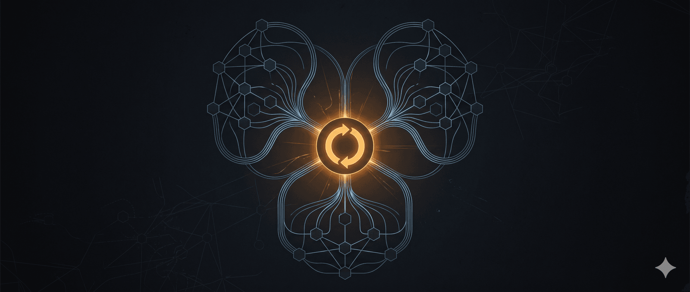
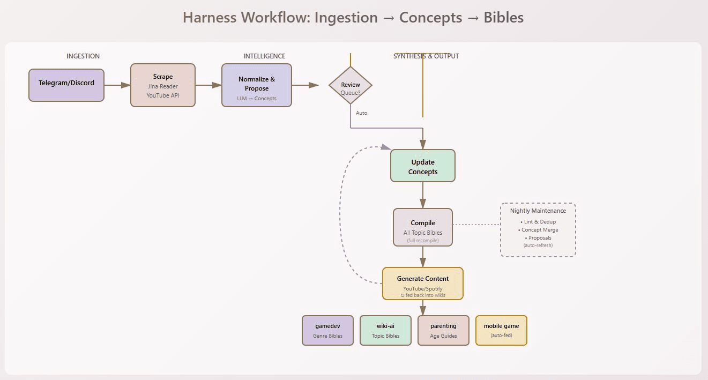
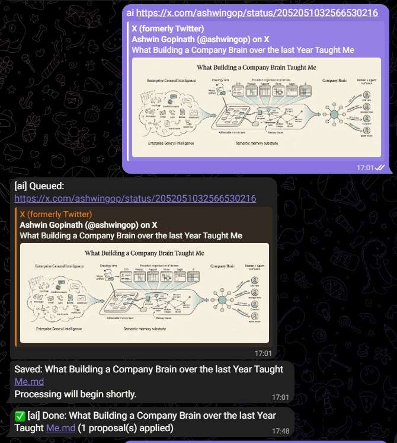
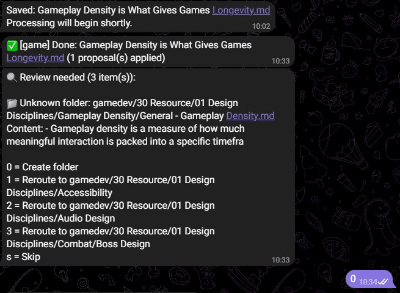

Mình thấy nhiều người chia sẻ quy trình làm việc với Obsidian của họ, để mình chia sẻ một chút về quy trình của mình. Mình không bán gì cả, nên không cần lo lắng. Bản gốc được viết bằng tiếng Anh vì tiếng Việt của mình chưa đủ tốt để viết một đoạn dài như thế này.
Bản tiếng Anh gốc ở bên dưới.
Từ Wiki đến Harness: Sự Phát Triển của Hệ Thống Tri Thức Cá Nhân
Khởi đầu với Gamedev Wiki
Khởi Đầu: Gamedev Wiki (Bằng Chứng Khái Niệm)
Mình bắt đầu với wiki-gamedev, xây dựng một vault có cấu trúc để thu thập kiến thức phát triển game. Vault này không chỉ là tập hợp các ghi chú—nó được tổ chức xung quanh các nguyên tắc thiết kế và thể loại game, với một quy trình rõ ràng: Bài Viết/Video Thô → Chuẩn Hóa → Đề Xuất Cập Nhật Khái Niệm → Áp Dụng Thay Đổi → Biên Soạn Bibles Theo Thể Loại.
Đây là bằng chứng khái niệm cho thấy mình có thể tự động hóa việc tổng hợp kiến thức. Thay vì tự tay viết “The Complete SHMUP Design Bible”, hệ thống sẽ:
-
Tiếp nhận hàng chục bài viết và video về shoot-em-ups.
-
Đề xuất những khái niệm nguyên tắc thiết kế nào (Difficulty Curves, Enemy Patterns, Scoring Systems, v.v.) cần được cập nhật.
-
Cho mình xem xét và phê duyệt các thay đổi.
-
Tự động biên soạn lại các topic bibles theo thể loại từ các khái niệm đã cập nhật.
Kết quả: Các bibles sống động luôn được cập nhật khi có nghiên cứu mới, thay vì các tài liệu tĩnh bị lỗi thời trong vài tuần. Mình đã phải xây dựng lại vault 3 lần để đạt được giai đoạn này.
Mở rộng sang wiki AI và Parenting
Mở Rộng: AI và Parenting Wikis
Thấy được sức mạnh của mô hình này, mình đã nhân rộng template:
-
wiki-ai: Thu thập nghiên cứu của mình về hệ thống LLM, prompt engineering, và các mẫu AI. Điều này trực tiếp đóng góp vào harness engineering của mình—các nguyên tắc nền tảng cho cách mình điều phối công việc tri thức.
-
wiki-parenting: Mở rộng khái niệm hơn nữa, với định tuyến theo nhóm tuổi. Một tuyên bố về “sleep training cho trẻ mới biết đi” sẽ được định tuyến đến cả trang chủ đề và khối nhóm tuổi, với tự động biên soạn lại các file master theo nhóm tuổi (Hướng Dẫn Trẻ Sơ Sinh, Hướng Dẫn Trẻ Mới Biết Đi, v.v.).
Mỗi vault tuân theo cùng một mẫu, nhưng với các sắc thái riêng theo lĩnh vực:
-
gamedev: Hàng đợi xem xét tương tác (95% tự động, chỉ một số định tuyến chi tiết cho các trang cụ thể theo thể loại).
-
ai: Hoàn toàn tự động (mình tin tưởng LLM duy trì độ chính xác).
-
parenting: Định tuyến theo nhóm tuổi (thêm một chiều kích ngoài các trang khái niệm).
Xây dựng Harness thống nhất
The Harness: Kết Nối Tất Cả Lại
Khi đã có ba wikis mạnh mẽ hoạt động độc lập, bước tiếp theo là hiển nhiên: mình xây dựng một orchestrator thống nhất. Vì vậy, tôi tự chế tạo bộ dây đeo của riêng mình., chạy trên Mac Studio headless của mình.
Harness tiếp nhận nội dung từ Telegram và Discord, định tuyến đến đúng vault, tổng hợp các tuyên bố thành khái niệm, áp dụng chúng, tái tạo tất cả topic bibles, và thậm chí tạo nội dung có thể chia sẻ từ chúng—hoàn toàn tự động, mỗi chu kỳ.
Quy Trình Chính:
-
Giao Diện Bot: Mình đăng link lên Telegram hoặc Discord. Bot được huấn luyện để nhận diện: /ai
, /game , /parenting . -
Scraping: Nội dung chảy qua Jina Reader (bài viết web) và YouTube Transcript API (video).
-
Lớp Intelligence: Các prompt dạng Markdown nằm trong mỗi vault. LLM đọc nội dung đã tiếp nhận và các khái niệm hiện có, đề xuất cập nhật dưới dạng JSON.
-
Giai Đoạn Áp Dụng:
-
Với gamedev: Hàng đợi xem xét của mình giữ các đề xuất. Mình phê duyệt/từ chối qua telegram/discord. Chỉ các thay đổi được phê duyệt mới được ghi vào vault.
-
Với ai & parenting: Các thay đổi được ghi trực tiếp.
-
Tái Biên Soạn: Vào cuối mỗi chu kỳ, tất cả topic bibles được tái tạo—Genre bibles, AI topic bibles, hướng dẫn parenting theo nhóm tuổi. Mọi thứ đều đồng bộ.
Vòng Phản Hồi Tạo Nội Dung:
Mình giờ có thể tạo nội dung chỉnh chu từ các topic bibles của mình—kịch bản cho YouTube, tóm tắt cho Spotify, hoặc các bài viết độc lập. Thay vì xuất bản chúng như đầu ra công khai, mình đã kết nối chúng trở lại vào wikis của mình. Điều này tạo ra một vòng lặp có lợi: nội dung mới trở thành nguyên liệu thô, được chuẩn hóa và tích hợp vào các khái niệm, làm phong phú thêm các bibles. Hệ thống tri thức của mình tự nhân lên.
Bảo Trì Hàng Đêm:
Mỗi đêm, khi mình ngủ, harness chạy một lượt dọn dẹp trên các vault:
-
Linting: Sửa các vấn đề định dạng, link lỗi, và các vấn đề cấu trúc.
-
Deduplication: Nhận diện và gộp các trang khái niệm trùng lặp.
-
Concept Merging: Phát hiện các khái niệm liên quan và đề xuất hợp nhất.
-
Fresh Proposals: Tạo các đề xuất gộp khái niệm mới cho chu kỳ tiếp theo.
Điều này giữ cho hệ thống tri thức của mình sạch sẽ và mạch lạc. Thay vì bị hư hỏng (link chết, trùng lặp, mảnh vỡ rải rác), các vault của mình ngày càng khỏe mạnh theo thời gian.
Hiệu ứng lan tỏa sang dự án game di động
Hiệu Ứng Bậc Hai: Mobile Game
Khi gamedev wiki đã đủ trưởng thành, mình khởi động một dự án mobile game. Thay vì tham khảo tài liệu thiết kế thủ công, code game trực tiếp tham chiếu đến SHMUP topic bible từ gamedev vault của mình.
Khi bible phát triển (bài viết mới đến, khái niệm được tinh chỉnh, best practices rõ ràng hơn), game tự động được hưởng lợi. Trí thông minh thiết kế chảy từ hệ thống tri thức vào công việc sáng tạo của mình.
Vận hành hệ thống ở hiện tại
Nơi Mình Đang Đứng Bây Giờ
Hệ thống của mình hoàn toàn tự động. Mỗi tuần:
-
Mình tìm các bài viết và video hữu ích.
-
Mình chỉ thả link vào Telegram/Discord những gì mình sẽ hưởng lợi và muốn đọc lại.
-
Harness tiếp nhận, tổng hợp, và cập nhật cả ba hệ thống tri thức.
-
Topic bibles được tái tạo với suy nghĩ mới nhất.
-
Nội dung được tạo ra phản hồi lại vào wikis (nếu mình tạo).
-
Mobile game của mình tự động nhận được hướng dẫn thiết kế tốt hơn.
-
Mỗi đêm, hệ thống tự dọn dẹp—deduping, linting, merging concepts.
Vậy là hết phần giới thiệu về wiki LLM tự động và cách tôi sử dụng nó để bổ sung kiến thức cho bản thân bằng cách đọc lại, xem video hoặc nghe các bản ghi âm từ Notebook LM, và cách tôi sử dụng nó để hỗ trợ các quy trình làm việc khác như xây dựng khung sườn cho LLM cục bộ của tôi, hoặc thử nghiệm làm game.
Tôi đã cố gắng dịch nó, nhưng tôi nghĩ là mình đã làm hỏng định dạng một chút, và Facebook không cho phép tôi đăng bài viết có hơn 100 dòng ngắt. 
Kiến trúc kỹ thuật chi tiết của hệ thống
Luồng hoạt động (The Flow)
Nội dung xuất hiện khi có người đăng URL vào Discord (bot đang theo dõi kênh). Bot nhận URL và xác định đây là nội dung cho AI wiki hay game dev wiki (định tuyến vault). Sau đó, URL được đưa vào hàng đợi, gắn mức độ ưu tiên (nhẹ / trung bình / nặng), và hệ thống gán mô hình AI phù hợp dựa trên độ phức tạp. Web scraper sẽ lấy nội dung bài viết từ web, rồi nội dung đi qua 4 giai đoạn xử lý: normalize → enrich → propose → apply. Nếu cần, bản đề xuất được gửi cho con người review trước khi commit vào wiki. Khi được duyệt, hệ thống ghi nội dung cuối cùng xuống disk. Toàn bộ hệ thống vận hành bất đồng bộ: mọi thứ chạy nền, các worker thông báo cho nhau khi có thay đổi và “conductor” điều phối ai làm gì.
Conductor (run.py)
Conductor là “bộ não khởi động” của hệ thống, giống như quản đốc dây chuyền: bật tất cả worker, giữ chúng hoạt động và đảm bảo chúng có thể giao tiếp với nhau. File này rất đơn giản (khoảng 50 dòng), hầu như không bao giờ phải thay đổi. Nhiệm vụ duy nhất: start worker và stop worker.
Notifier
Notifier là hệ thống liên lạc giữa các worker. Khi Worker A cần báo cho Worker B biết điều gì đó, nó gửi message qua Notifier, và Worker B sẽ nhận callback kiểu “sự kiện X vừa xảy ra”. Thành phần này chủ yếu dùng để gửi cập nhật trạng thái, báo lỗi, hoặc kết quả phê duyệt.
Task Queue
Task Queue là to-do list trung tâm của hệ thống. Nó có các chức năng chính:
Thêm task mới (enqueue), ví dụ “xử lý URL này”.
Phân loại task là nhẹ, trung bình hay nặng.
Gán model phù hợp cho từng loại task.
Lấy task tiếp theo để xử lý (dequeue).
Đánh dấu task hoàn thành hoặc thất bại.
Lưu / tải trạng thái xuống disk để không mất task khi hệ thống restart.
Web Scraper
Web Scraper chịu trách nhiệm lấy nội dung từ URL. Nó dùng API Jina Reader để kéo về markdown sạch. Cụ thể:
Lấy nội dung bài viết (extract content).
Lấy tiêu đề (extract title) hoặc suy ra từ URL nếu thiếu.
Dọn các artifact như link markdown bị lỗi do quá trình convert.
Pipeline Processor
Pipeline Processor chạy nội dung qua 4 bước tuần tự như dây chuyền sản xuất: normalize, enrich, propose, apply. Bước normalize chuẩn hóa format và dọn markdown; enrich thêm metadata, reference và liên kết chéo; propose tạo bản nháp thay đổi; apply ghi thay đổi vào file wiki. Mỗi bước là một script riêng chạy dưới dạng subprocess. Pipeline builder thiết lập biến môi trường (vault, model, v.v.) rồi gọi từng script theo thứ tự. Mỗi stage có prompt riêng mà harness gửi cho LLM kèm nội dung.
Bot Worker (Discord Bot)
Bot Worker theo dõi kênh Discord 24/7. Khi có message mới, nó kiểm tra prefix (ai: hoặc game:) để định tuyến đến đúng vault. Các lệnh chính: URL sẽ được scrape và đưa vào queue; link YouTube sẽ được transcribe trước; text khác được chuyển tới handler phù hợp. Bot Worker cũng xử lý phản hồi review (approve / reject), và gửi thông báo trạng thái ngược lại lên Discord, ví dụ “ingestion complete!”.
Queue Worker
Queue Worker là worker xử lý chính của pipeline ingestion. Nó liên tục lặp: lấy task tiếp theo từ Task Queue, thực thi (thường bằng cách gọi Pipeline Processor), theo dõi quá trình chạy, báo cho Bot Worker khi xong, đánh dấu task là complete hoặc fail rồi chuyển sang task kế tiếp. Đây là “cỗ máy chính” thực sự chạy pipeline cho từng item trong hàng đợi.
Chat Worker
Chat Worker là một interface hội thoại nhẹ, chạy model nhỏ và nhanh (qua Ollama) trên máy local. Nó dùng cho các cuộc trao đổi nhanh với người dùng và trả lời các câu hỏi đơn giản về wiki. Những job nặng luôn được chuyển cho Queue Worker thay vì Chat Worker.
Linting & Analysis Worker
Linting & Analysis Worker là worker kiểm tra chất lượng chạy theo lịch, thường là ban đêm. Nó đọc toàn bộ các trang wiki và: kiểm tra link hỏng, validate cấu trúc format (heading, v.v.), tìm metadata còn thiếu, tạo báo cáo lỗi ở dạng dễ đọc. Với những vấn đề đơn giản nằm trong block được cho phép, nó có thể tự động sửa.
Cách các thành phần phối hợp
Một luồng ingest wiki điển hình: người dùng đăng URL lên Discord, Bot Worker thấy message và parse prefix để xác định vault, sau đó tạo một task mới và thêm vào Task Queue. Queue Worker thức dậy, lấy task đó, yêu cầu Task Queue phân loại, nhận về kết quả như “task nặng” và thông tin model tương ứng. Queue Worker yêu cầu Model Manager load đúng model, rồi gọi Web Scraper để fetch URL. Scraper trả về title và markdown đã dọn sạch. Queue Worker chạy Pipeline Processor qua 4 stage: normalize → enrich → propose → apply, mỗi stage chạy trong subprocess với thông tin vault và model. Pipeline Processor trả về một summary, Queue Worker đưa summary đó vào flow review cho Review Worker / con người. Khi người dùng duyệt trên Discord, Bot Worker thấy approval và báo Queue Worker finalize. Lúc này nội dung được ghi vào wiki, và Notifier gửi cập nhật trạng thái ngược lại lên Discord. Trong suốt quá trình này, Conductor luôn chạy để đảm bảo mọi worker sống và nói chuyện được với nhau, còn Linting Worker chạy riêng vào ban đêm để audit toàn bộ hệ thống.
--------
Bản gốc tiếng Anh
I see many people sharing their Obsidian workflow, let me share a little of mine. I’m not selling anything, so no need to worry.
From Wiki to Harness: The Evolution of My Knowledge System
The Beginning: Gamedev Wiki (Proof of Concept)
I started with wiki-gamedev, building a structured vault to capture my game development knowledge. The vault wasn’t just a collection of notes—it was organized around design disciplines and genres, with a clear pipeline: Raw Article/Video → Normalize → Propose Concept Updates → Apply Changes → Compile Genre Bibles.
This was my proof of concept that I could automate knowledge synthesis. Rather than manually writing “The Complete SHMUP Design Bible,” the system would:
-
Ingest dozens of articles and videos about shoot-em-ups.
-
Suggest which design discipline concepts (Difficulty Curves, Enemy Patterns, Scoring Systems, etc.) should be updated.
-
Let me review and approve the changes.
-
Automatically recompile the genre-specific topic bibles from the updated concepts.
The result: Living bibles that stayed current as new research came in, instead of static documents that went stale in weeks. It took me 3 vault rebuilds to get to this stage.
Expansion: AI and Parenting Wikis
Seeing the power of this model, I replicated the template:
-
wiki-ai: Captured my research on LLM systems, prompt engineering, and AI patterns. This fed directly into my harness engineering—the principles that underpin how I orchestrate knowledge work.
-
wiki-parenting: Extended the concept further, with age-group routing. A claim about “sleep training for toddlers” would route to both a topic page and an age-group block, with automatic recompilation of age-grouped master files (Infant Guide, Toddler Guide, etc.).
Each vault followed the same pattern, but with domain-specific nuances:
-
gamedev: Interactive review queue (95% automated, just some detailed routing for genre specific pages).
-
ai: Fully automated (I trusted the LLM to maintain accuracy).
-
parenting: Age-group routing (added a dimension beyond just concept pages).
The Harness: Tying It All Together
Once I had three independently powerful wikis, the next step was obvious: I built a unified orchestrator. So I build my own harness, running on my headless Mac Studio.
The harness ingests content from Telegram and Discord, routes it to the right vault, synthesizes claims into concepts, applies them, regenerates all topic bibles, and even generates shareable content from them—fully automated, every cycle.
The Main Flow:
-
Bot Interface: I post links to Telegram or Discord. The bot’s trained to recognize: /ai
, /game , /parenting . -
Scraping: Content flows through Jina Reader (web articles) and YouTube Transcript API (videos).
-
Intelligence Layer: Markdown-driven prompts live in each vault. The LLM reads ingested content and existing concepts, proposes updates as JSON.
-
Apply Stage:
-
For gamedev: My review queue holds proposals. I approve/reject via telegram/discord. Only approved changes write to the vault.
-
For ai & parenting: Changes write directly.
-
Recompilation: At the end of every cycle, all topic bibles regenerate—Genre bibles, AI topic bibles, age-grouped parenting guides. Everything stays in sync.
The Content Generation Feedback Loop:
I can now generate polished content from my topic bibles—scripts for YouTube, summaries for Spotify, or standalone articles. Rather than publishing this as my public output, I’ve wired it back into my wikis. This creates a virtuous cycle: new content becomes raw material, which gets normalized and incorporated into concepts, which enriches the bibles further. My knowledge system compounds on itself.
Behind the Scenes: Nightly Maintenance
Every night, while I sleep, the harness runs a cleanup pass on my vaults:
-
Linting: Fixes formatting inconsistencies, malformed links, and structural issues.
-
Deduplication: Identifies and merges duplicate concept pages.
-
Concept Merging: Detects related concepts and proposes consolidations.
-
Fresh Proposals: Generates new concept merge proposals for the next cycle.
This keeps my knowledge systems clean and coherent. Instead of rot setting in (dead links, duplicates, scattered fragments), my vaults get healthier with time.
The Second-Order Effect: Mobile Game
Once my gamedev wiki was mature enough, I spun up a mobile game project. Rather than manually consulting design documents, the game code directly references the SHMUP topic bible from my gamedev vault.
As the bible evolves (new articles come in, concepts get refined, best practices clarify), the game automatically benefits. Design intelligence flows from my knowledge system into my creative work.
Where I Am Now
My system is fully automated. Every week:
-
I find useful articles and videos.
-
I only drop links into Telegram/Discord that I would benefit from and want to read again.
-
The harness ingests, synthesizes, and updates all three knowledge systems.
-
Topic bibles regenerate with the latest thinking.
-
Generated content feeds back into the wikis (if I create it).
-
My mobile game gets better design guidance automatically.
-
Every night, the system cleans itself—deduping, linting, merging concepts.
So that is it for the automated LLM wiki and how I use it to feed my own knowledge by rereading it, watching the vidoes, or listening to the output by Notebook LM, and how I use it to feed other workflows like building the harness for my local LLM, or test making a game.




🔍 Phân tích bài viết
📌 Tóm tắt ý chính
- Tác giả xây dựng hệ thống “harness” — một orchestrator tự động hóa toàn bộ quy trình ingest, tổng hợp, và cập nhật kiến thức từ 3 wiki riêng biệt (gamedev, AI, parenting).
- Kiến trúc gồm nhiều worker chuyên biệt (Bot, Queue, Linting, Chat, Notifier) phối hợp bất đồng bộ, điều phối bởi một Conductor đơn giản ~50 dòng.
- Pipeline 4 bước (normalize → enrich → propose → apply) cho phép LLM đề xuất cập nhật khái niệm, con người chỉ cần review phần cần thiết.
- Vòng lặp tự tăng trưởng: nội dung mới → wiki → topic bibles → content generation → feed ngược lại → wiki ngày càng giàu hơn.
- Second-order effect: mobile game tự động hưởng lợi khi SHMUP bible trong wiki-gamedev được cập nhật — kiến thức chảy trực tiếp vào sản phẩm.
🗺️ Mindmap
💡 Insight & Góc nhìn đa chiều
Xu hướng: Hệ thống tri thức cá nhân đang chuyển từ “lưu trữ thụ động” sang “compound knowledge machine” — không chỉ ghi chép mà tự động tổng hợp, làm sạch, và tái cấu trúc kiến thức liên tục. Đây là điểm khác biệt căn bản so với Zettelkasten hay PKM truyền thống.
Ai được lợi: Người có khả năng engineering để xây dựng harness như vậy — tác giả tự thừa nhận phải rebuild vault 3 lần. Barrier to entry cao, nhưng lợi thế cạnh tranh với người không làm được cũng rất lớn.
Điều ẩn: Hệ thống này thực chất là một “second brain với vòng phản hồi” — điểm đột phá không phải là lưu trữ tốt hơn, mà là kiến thức tự compound như lãi kép. Mỗi bài mới không chỉ thêm vào kho mà còn làm phong phú mọi thứ đã có. Đây là nguyên lý mà hầu hết người dùng Obsidian bỏ lỡ.
Ẩn số kỹ thuật: Tác giả không đề cập cost LLM hàng tháng và độ chính xác thực tế của pipeline — hai yếu tố quyết định tính bền vững dài hạn.
⚖️ Phản biện
- Chi phí ẩn rất cao: Chạy LLM cho mọi URL ingest, tái biên soạn toàn bộ bibles mỗi chu kỳ, nightly maintenance — cost token có thể leo thang nhanh. Tác giả không nêu con số, dễ gây ảo tưởng rằng đây là giải pháp scalable cho mọi người.
- “Fully automated” nhưng phụ thuộc con người ở bước cuối: Với gamedev (lĩnh vực quan trọng nhất), vẫn cần approve thủ công. Nếu tác giả bận vài ngày, queue sẽ tồn đọng. Hệ thống không tự vận hành hoàn toàn như tiêu đề ngụ ý.
- Chất lượng phụ thuộc chất lượng input: Nếu tác giả chỉ thả link chứ không đọc kỹ, LLM có thể ingest thông tin sai hoặc thiên lệch vào wiki — và một khi khái niệm sai đã được apply, nó sẽ lan sang topic bibles. Linting worker không thể phát hiện “logical error” trong nội dung.
- Rủi ro monoculture kiến thức: Mọi thứ đều qua cùng một LLM với cùng prompt → risk thu hẹp góc nhìn thay vì mở rộng. Wiki có thể phản ánh bias của model hơn là thực tế đa chiều.
❓ Câu hỏi mở
- Khi hai bài viết contradicts nhau về cùng một khái niệm (ví dụ: hai nghiên cứu trái chiều về sleep training), harness xử lý conflict như thế nào — ghi đè, gộp, hay giữ cả hai với annotation?
- Chi phí LLM thực tế hàng tháng cho hệ thống này là bao nhiêu, và tại ngưỡng nào thì nó không còn hiệu quả kinh tế so với đọc và ghi chú thủ công?
- Liệu topic bibles được tái biên soạn tự động có đủ chất lượng để thay thế tư duy tổng hợp của con người, hay chúng chỉ là “tóm tắt tốt hơn” mà thiếu đi những kết nối sáng tạo đột phá?
🇻🇳 Liên hệ Việt Nam
- Thị trường lao động tri thức VN: Mô hình này cho thấy năng suất cá nhân có thể được nhân lên nhiều lần nhờ automation — người biết xây dựng hệ thống như vậy sẽ có lợi thế lớn trên thị trường lao động. Tuy nhiên, đây đòi hỏi kỹ năng engineering lẫn habit xây dựng kiến thức — hiếm ở VN hiện tại.
- Cộng đồng Obsidian VN: Bài này xuất hiện trong group Obsidian Second Brain tiếng Việt — cho thấy nhu cầu PKM đang tăng ở VN, nhưng phần lớn người dùng còn ở giai đoạn lưu trữ thụ động, chưa đến giai đoạn compound automation như tác giả.
- Cơ hội startup/service: Ở VN chưa có sản phẩm “personal knowledge harness as a service” — cơ hội cho developer muốn xây tool tương tự cho doanh nghiệp nhỏ hoặc cá nhân không có nền tảng engineering.
Điều thú vị nhất: khái niệm vòng lặp tự tăng trưởng — nội dung mới không chỉ được lưu mà còn làm phong phú toàn bộ wiki hiện có. Clipping vault của mình cũng đang cố làm điều này qua wiki-ingest, nhưng chưa có bước “content generation feed back” như tác giả.
Với công việc thiết kế khuôn tại một công ty Nhật, mình không cần hệ thống phức tạp đến mức này. Nhưng nguyên lý “chỉ lưu những gì muốn đọc lại” và “pipeline có review stage” là đáng học và áp dụng — thay vì lưu mọi thứ rồi không bao giờ quay lại.
📖 Giải thích thuật ngữ
Harness: Nghĩa đen là “bộ dây khai thác” (như dây cho ngựa). Trong lập trình, “harness” là framework/bộ công cụ điều phối nhiều thành phần. Ở đây tác giả dùng để chỉ orchestrator thống nhất quản lý toàn bộ hệ thống wiki.
Topic Bible: Tài liệu tổng hợp toàn diện về một chủ đề, được tái biên soạn tự động từ các khái niệm trong wiki. Giống như “cẩm nang” sống — luôn được cập nhật, không bao giờ lỗi thời.
Conductor pattern: Kiến trúc phần mềm có một “nhạc trưởng” đơn giản điều phối nhiều “nhạc công” (workers). Mỗi worker làm một việc chuyên biệt; conductor chỉ start/stop/monitor — không xử lý logic.
Jina Reader: API chuyển trang web thành markdown sạch, loại bỏ navigation, quảng cáo, và HTML rác — phù hợp để đưa vào LLM.
Deduplication: Phát hiện và gộp các trang/khái niệm trùng lặp hoặc rất giống nhau. Giống như phát hiện hai contact “Nguyễn Văn A” và “Anh Nguyễn” trong điện thoại là cùng một người.